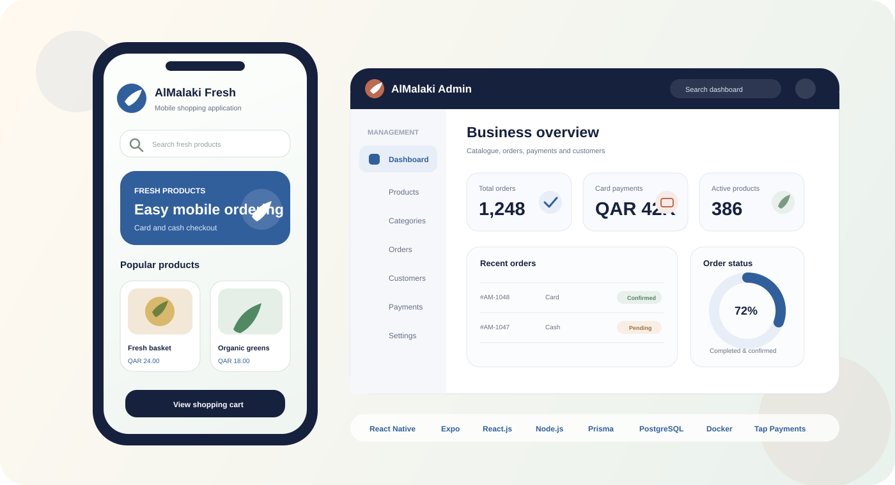

Software engineering / Full stack
I build complete products — from backend logic to usable interfaces.
I’m Yosr Zayani, a software engineer focused on Java / Spring Boot, Angular, React and Node.js. My experience includes two hands-on full-stack projects, banking microservices with WSO2 API Manager, REST API integration, payments and containerized delivery.

About
Developer first. Architecture-aware. Product-minded.
I enjoy building applications end to end: understanding a business flow, designing the backend, exposing clean APIs and connecting them to a usable frontend. My strongest foundation is Java / Spring Boot and Angular, complemented by practical projects with React, Node.js, PostgreSQL and React Native.
I have worked on a real client commerce platform, a marketplace product and a banking final-year project using microservices and WSO2 API Manager. That mix taught me to move between product requirements, implementation details, API integration, testing and deployment constraints.
Professional experience
My first real full-stack experiences are the center of my profile.
AlMalaki Fresh and Moutouri are presented first because they show what I have built outside an academic context. BIAT is clearly separated as my final-year engineering project.

Full Stack Commerce Platform
AlMalaki Fresh
Jun. 2026 — Present
My main responsibility is the Node.js backend and the React administration dashboard. I also contributed targeted changes to the React Native mobile application, especially API integration and iOS-related adjustments.
- Built backend business flows with Node.js, Express, Prisma and PostgreSQL.
- Built the admin dashboard for catalogue, customers, orders, payments and delivery settings.
- Integrated Tap Payments and handled real payment-flow constraints, including 3-D Secure and transaction status consistency.
- Worked with a monolithic backend architecture organized by business modules.

Marketplace Full Stack
Moutouri
Oct. 2025 — Jan. 2026
Built a marketplace for motorcycles and spare parts with shop registration, product publishing, role-based dashboards and public listings.
- React user interfaces and role-based dashboards.
- Node.js / Express REST APIs and JWT authentication.
- MongoDB data model for users, shops, products and listings.
Engineering foundation
Final-year project & internships
Banking Microservices Platform
Refactored a banking onboarding flow into a microservices architecture using Spring Boot and Angular, with WSO2 API Manager as the API management layer and Spring Cloud components for routing, discovery and configuration.
Industrial Data & BI
Automated an ETL workflow with Python, transformed production data, modeled it in SQL Server and created Power BI dashboards for analysis.
Frontend Development
Developed React.js interfaces for a reporting application and collaborated through GitLab in an existing development workflow.
Selected work
Three projects that explain how I engineer software.
Real client • Full Stack
AlMalaki Fresh
Backend ownership, admin dashboard, payment integration and targeted mobile adjustments in one real commerce product.
Freelance • Marketplace
Moutouri
React marketplace, Node.js APIs, authentication, roles and MongoDB-backed product workflows.
PFE • Banking architecture
BIAT-IT Banking Platform
Spring Boot microservices, Angular, WSO2 API Manager, Spring Cloud and a CI/CD toolchain in an enterprise banking context.

Technical stack
A focused stack — not a wall of technologies.
Core Development
Java, Spring Boot, Angular, React, Node.js, Express.js, JavaScript, TypeScript, REST APIs.
Data & Persistence
PostgreSQL, MySQL, MongoDB, SQL Server, Prisma ORM, relational modeling and API-driven data flows.
Architecture & Integration
Microservices, monolithic backend design, WSO2 API Manager, Spring Cloud Gateway, Eureka, Config Server, JWT and OAuth2 concepts.
Engineering & Delivery
Docker, Jenkins, Git, GitLab, CI/CD, SonarQube, Nexus, Nginx and Kubernetes fundamentals.
Testing & Quality
JUnit, Mockito, Postman, API testing, unit/integration testing, regression testing and ISTQB Foundation concepts.
Additional
React Native, Expo, Tap Payments, Power BI, Python. Currently exploring SAP Commerce Cloud / Spartacus.
Education & learning
Engineering foundation with continuous practical learning.
Engineering Degree in Software Engineering
ESPRIT • Tunisia
Business Intelligence specialization • Mention Très BienPreparatory Cycle for Engineering Studies
Preparatory Institute for Engineering Studies of Nabeul
Continuous Learning
Kaggle — Intro to Machine Learning • Kaggle — Pandas • Cisco — Introduction to Data Science
French B2 • English B2 • Arabic nativeContact
Looking for a Full Stack engineer who can work across the product?
I’m open to Full Stack Software Engineer and Java Backend opportunities in Tunisia and remote-friendly international teams.